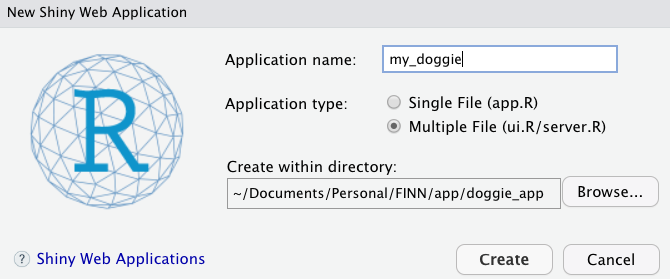
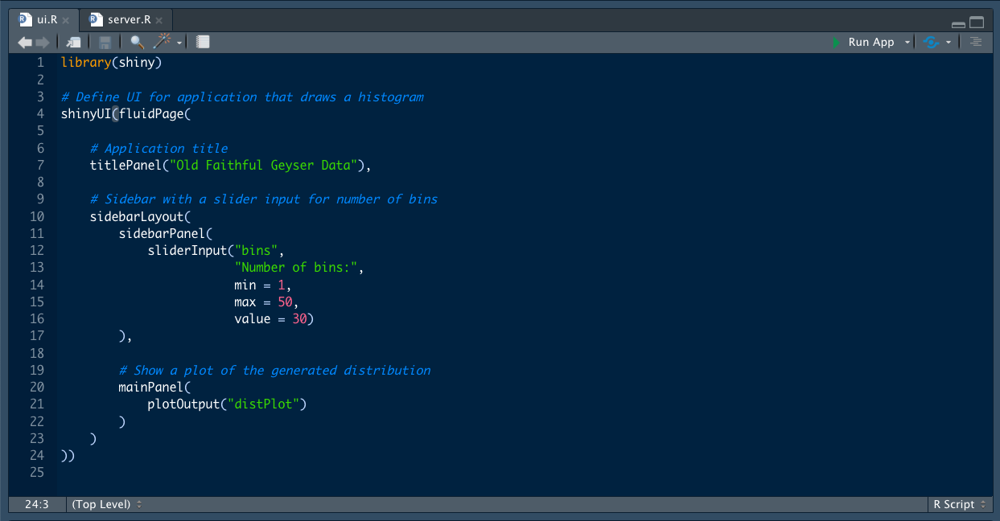
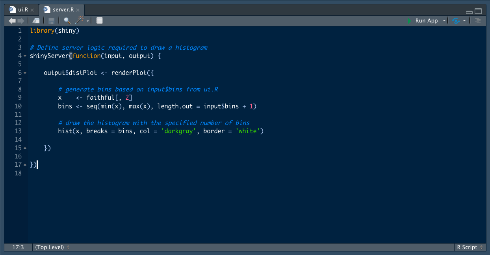
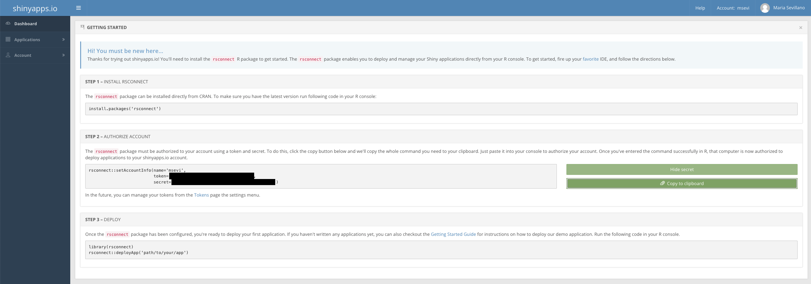

Build a Shiny app with me
By Maria Sevillano
April 22, 2022
Aim and scope
The objective of this blog post is to walk through app creation and deployment using Shiny and shiny.io. This is intended to provide a high level overview of the process, but I highly encourage anyone interested in building their own apps to look into the resources compiled here. The shinyapps.io user guide is a very concise document to get anyone started!
Why should you create an app?
- Cause it’s fun!
- To learn a new skill
- To encourage exploration and enable collaboration
- To generate revenue?
In the past I have generated shiny apps to
- share results internally with my supervisor,
- share analyses and visualization with collaborators,
- share a dashboard with stakeholders, and
- save money for my wedding! (let me know if you’d like to hear this story 😉)
Initially, these applications were loaded in one-on-one meetings and resided on my local computer. Next, they were distributed as an Rproject through a USB. Finally, they were deployed to the web through shinyapps.io.
These notes have been generated as I create an app to track struggles of being a first time dog human: the my_doggie app. Check it out!
Here’s how YOU can create your own.
Step 1: Get inspired
Check out all the things you can create here! Determine the appropriate layout and theme to suit your use case. Consider what’s important for you and how much time you have to generate it. Substance over aesthetics is ideal, but you can achieve both! Remember, this is a live document and you can always build on it.
Step 2: Create your application
First things first. Create a R project. This practice will help future you stay organized. As a part of a workflow, you want to keep your input data, R scripts for analyses and additional files all together, so that they are easily accessible. Projects provide you with structure and the folders and files contained within it are referred to relative to the path where the project is (i.e., the working directory), this comes in handy when you want to distribute your work as well. You can find additional info about projects here.
If you don’t already have it, download the {shiny} package. To create
an application from your RStudio IDE, simply go to File –> New File
–> Shiny Web App. This will generate a directory with the app name and
within it, two files with the structure for a minimal application.

The file structure within an app project can either consist of a single file (app.R), two-file (ui.R and server.R) or three-file (ui.R, server.R, and global.R) shiny app. Generally, multiple file apps make code easier to manage when the applications are large. In my case, I like to generate a three-file app to control global options in a single file and reduce redundancy in package loading.
Additionally, I create a file called www to place things like files and images that I will want to use within the app. If you have a data heavy application, create a file called Data, to organize external tables.
Click Run App on the top right of the console to locally serve this app.
You can render the app in RStudio, but I highly recommend to test in browser, as sometimes the viewer won’t showcase the contents properly.
An app requires two main elements:
- UI (user interface): What the app looks like
- Server: How the app works
UI
Defines the app layout (i.e., front-end).

In the minimal example provided by RStudio, the app backbone consists of
a title, a sidebar panel in which the user provides an input using a
slider, and a main panel which will contain the result of input action
plotOutput("distPlot").
Use the help function on the layout functions to understand the arguments and play around to generate changes.
I always recommend to create an outline using # placeholder---- as
text in the code. This allows you to collapse text and navigate more
easily within the app’s sections.
Server
Defines the app (i.e., back-end) logic.

In the minimal example provided by R, the server contains the
output$distPlot function to render a plot subject to user changes of
the input$bins variable.
Reactivity is at the core of Shiny and the interactive user experience. It controls certain areas of the code, without us having to run the code in its entirety. Shiny uses a reactive programming model that consists of reactive sources, reactive conductors, and reactive endpoints. Learn more here
The minimal structure consists of sources and endpoints. Source is user input through the interface (e.g., select item, type input, click on button). Endpoint is the result of source input (e.g., plot or table). Just take a look at the arguments of the function that make up the server: input and output! The changes in input (i.e., re-executing) result in new output objects that refresh automatically (the handling of events occurs behind the scene). Reactive programming allows output to respond to changes in inputs. Keep in mind that you should have pairs of input ids (in the UI part) with server functions (in the server part).
My app
I want to be able to organize the app in a series of tabs, for which
each tab may have a sub-component. For that purpose, I will be using the
navbarPage() function. Take a look at other layouts
here.
After structuring the tabs, the fun part begins! Shiny is very flexible
and you can customize your app by styling with CSS and HTML. This can be
done inline or using additional files. Nevertheless, if you are not well
versed at these technologies, you can opt to use the package {bslib}
to get great looking themes.
I will add the theme argument into the navbarPage() function.
Perfect! Now you have the backbone as well as the color. What’s left? The CONTENT. Depending on what (e.g., use static images/plots) and how you want the app to work (e.g., interact, collect data), the complexity of your application will change.
In order to have a more polished look using HTML and CSS is highly recommended, but remember, Google is your best friend! No need to reinvent the wheel.
Another really cool package I incorporated to my app was
{googlesheets4}. If you’d like to load data that is stored as a table
in a remote server, you are in luck! This package provides flexibility
to access and write Google Sheets, all you need is a Google account and
a Google Sheets spreadsheet with data.
A really cool widget to add to any shiny app is mapping. The {leaflet}
package allows to embed geo-spatial mapping. For the app I’m creating,
I’m using tables from Google Sheet as the input for markers in the
{leaflet} map.
Come back soon to check out other capabilities I add to the app!
Step 3: Deploy
There are several ways to host your apps. Here are some options. I am familiar with ShinyApps.io so that’s what I will use.
As long as you don’t expect a lot of traffic into your app and you limit yourself to only hosting 5 applications or less with them, it is free to use and convenient in terms of setup.
This is how you do it:
- Create shinyapps.io account
- Install rsconnect: the package enables you to deploy and manage your Shiny applications directly from your R console
- Authorize account: this step requires using a token and secret.
- Deploy
Here’s an image capture of the steps from shinyapps.io

There you have it, you can now create and deploy an app for the world to see! 🥳
- Posted on:
- April 22, 2022
- Length:
- 6 minute read, 1258 words
- See Also: